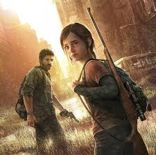

the last of us es una franquicia de videojuegos ambientados en el año 2033 (the last of us 1) en adelante, la saga sigue a Ellie y Joel luchando por su supervivencia en un mundo infectado por el hongo Cordyceps, luchando con infectados y otros supervivientes
la franquicia de The last of us esta compuesta por 3 juegos principales y algunas novelas y comics, estos son los juegos en orden cronológico:
| Entrega | Fecha en la cronológia |
| The last of Us 1 (prologo) | 2013 |
| The Last Of Us: left behind | en algun momento entre 2019 y 2033 |
| The Last Of Us | 2033 |
| The Last Of Us: parte II | 2038 |
Dentro de the last of us, las facciones juegan un papel principal dentro de la historia, cada una cuenta con su propio origen, ideales, lideres. Las más relevantes en la historia del juego son: